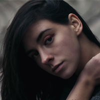

Шелякова
София
Меня зовут Соня. Мне 19 лет. Я живу в городе Киеве. Сейчас студентка 2 курса
Государственного Университета Телекомуникаций, факультет Компьютерная инженерия.
Учусь хорошо, поскольку в основном мне нравятся преподаватели и предметы, которые у меня есть.
Благодаря этому месту я узнала много чего нового и нашла окончательно ту ветвь которая мне интересна
и которой я хочу заниматся. А именно это FrontEnd и BackEnd розработка. Давным давно я для себя определила
эту професию, празда изначально как веб-дизайн. И начала я этим заниматся с 8 класса школы,
посещала бесплатные занятия раз в неделю в классе информатики. Именно там меня познакомили с html
и слегка сss языками. И с самого первого занятия я была в восторге, как использую всего лиш определенные
кодовые слова и блокнот можно получить полноценную веб страничку. Вплоть до окончания школы я посещала
районные и городские олимпиады по веб-дизайну, занимая призовые места. Поступив в университет я познакомилась
с другим миром программирования и компьютера. Я узнала что находиться в корпусе, как это чинить, что
такое интернет и как он работает. Меня научили таким языкам как С, С++ и слегка Python. А так же именно
там я приобрела навыки владения фотошопом и основами IT-английского. Сейчас я посещаю FullStack курсы,
которые я надеюсь дадут мне основные знания для моей дальнейшей профессии.
Из личных увлечений хочу
отметить такие как: посещение тренажерного зала, ведения профиля в соц. Сети Instagram, чтение различного
рода литературы, фильмы и сериалы. Из личных качеств всегда отличалась трудолюбием, организованостью,
дружелюбием и добротой. Что подразумевает что проэкты всегда стараюсь выполнять вовремя, легко нахожу
общий язык с людьми и просто вписываюсь в новые компании и команды.
| Телефон |
+(380)95-435-86-89 |
|
| E-mail |
s.sheliakova@gmail.com |
|
Мои знания
C
C++
Python
HTML
CSS
English
Photoshop
|